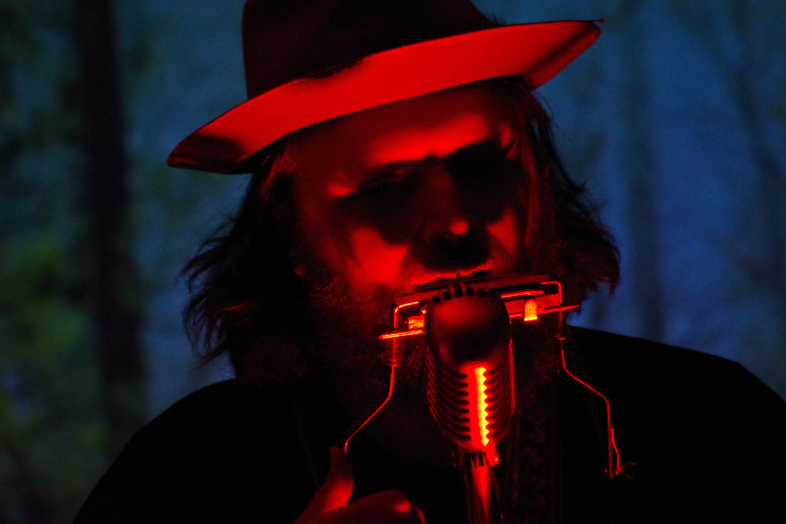

UPCOMING PERFORMANCE SCHEDULE
See previous performances →Chris O'Driscoll
A singer, songwriter, guitarist, multi-instrumentalist, and all-around noise maker, Chris O'Driscoll combines elements of Folk, Bluegrass, Indie, Alternative, Jazz, Country, Western, Blues and Soul into his unique blend of acoustic music.
Originally hailing from America's heartland, he has called the state of New York his home for over a decade. Currently based at the crossroads of the Catskill Mountains and Hudson Valley regions, his music explores our relationships with nature, the unknown, ourselves and each other, taking its listeners on a journey of discovery in all its forms.